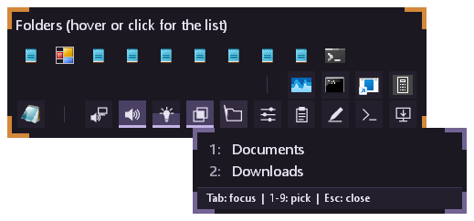
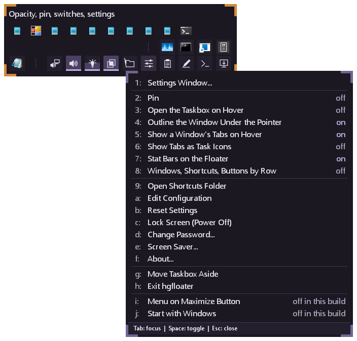

5 The toolbar
The toolbar is ten built-in buttons in the same grid as the icons: A/V Vol Mon Alp Dir Set Clip Note Cmd D, with D in the bottom-right corner.
Moving the taskbox out of the way (Move Taskbox Aside) and quitting (Exit hgfloater, or Ctrl + Q) are rows of the Set list, and the taskbox is resized by its borders, so the grid holds only things you use every day.
Each button shows an icon; the names below are what the tooltips and the status line call them. Three buttons open a list or a popup window instead of acting at once, and three, Vol, Mon and Alp, show a reading as a gauge inside their tile.
The icons are drawn, not stored. Each is a few strokes, drawn fresh at the size the taskbox's icons have, so they stay sharp however large the font makes them. A button's key badge appears in its top-left corner while it is pointed at or holds the keyboard focus, or while a modifier key is held.
A button's tooltip names its key. Pointing at Cmd reads Command Box (C, Ctrl+E); a button that no key reaches says only what it does. The keys come from the key table when the tooltip is built, so a key you rebind is the key the tooltip shows.
| Button and icon | Click | Wheel |
|---|---|---|
D Desktop: a screen, an arrow down | Minimizes every window; click again to restore them. | — |
Cmd Command: a prompt >_ | Opens the command box. | — |
Note Note: a pen and the line it wrote | Opens the note list. | — |
Clip Clipboard: a clipboard | Opens the clipboard history, as Ctrl + L does; press again, with it in front, to close it. | — |
Set Settings: three sliders | Opens the control list: the pin, the switches, the settings window and the other doors, Move Taskbox Aside and Exit hgfloater. | — |
A/V Audio and video: a speaker and a screen | Opens the A/V Control Center: output device, screens, scaling, brightness. | — |
Vol Volume: a speaker and its waves | Mutes and unmutes. Right-click opens Audio in the A/V Control Center. | Sets the volume. |
Mon Monitor: a lit bulb | The scaling for this screen. Right-click opens Display in the A/V Control Center. | Sets the brightness. |
Alp Opacity: two overlapping sheets | — | Sets the taskbox's opacity. |
Dir Folders: a folder | Opens the folder list: the shortcuts that point at a folder. | — |
5.1 The Dir button#
Point at Dir, land on it with the arrow keys, or click it, and the folders appear in a list beside the button, above or below it, whichever fits the screen, never over the button itself. Click a row, or press its number, and that folder opens in Explorer; the list and the taskbox both get out of the way, because a folder is somewhere you are going.

Figure 5.1 — The Dir list beside the Dir button: the folder shortcuts (Windows 11 virtual machine, v0.18.3, 2026-11-28)
The folders are the shortcuts you already have. Any .lnk in the shortcuts folder whose target is a folder is listed here instead of taking a cell in the icon grid: a folder is a place to go rather than a program to run, and a dozen of them would crowd out the programs. There is nothing to register: drop a folder shortcut in, and it moves itself to this list. A shortcut that does not resolve to a real folder stays an icon.
5.2 The Set button#
Set is everything there is to set. Point at it, or land on it with the arrow keys, and its list opens; neither needs a click first. The rows are grouped by what a row is, top to bottom:

Figure 5.2 — The Set list beside the Set button (Windows 11 virtual machine, v0.18.3, 2026-11-28)
| Row | What it does |
|---|---|
| Settings Window… | First, because everything below can also be changed there: the settings window, every option, value, font and key in one list. |
| Pin | Pins the taskbox open: while pinned, moving the mouse away no longer collapses it. Esc, the global hotkey, a floater click and quitting still close it. Click, Space or Enter toggles. |
| the switches | Every on/off setting, one row each, with on or off beside it. Click, Space or Enter flips one. |
| Open Shortcuts Folder | Opens the shortcuts folder in Explorer. This is how shortcut icons are added; see How to add a shortcut icon. |
| Edit Configuration | Opens config.ini in your editor. |
| Reset Settings | Position, size and opacity back to their defaults. |
| Lock Screen (Power Off) | Locks the session and turns the displays off. |
| Change Password… | Opens Windows' sign-in options, where Password changes the current account's password (a Microsoft account's is changed online from there). |
| Screen Saver… | Opens Windows' Screen Saver Settings: the saver, how many minutes it waits, and whether coming back asks for the sign-in screen. |
| About… | The About window with the built-in help, what F1 opens. |
| Move Taskbox Aside | Nudges the taskbox just far enough to stop covering the spot it was on. Repeated, it keeps its heading until it reaches a screen edge, then turns counter-clockwise: north, west, south, east. If no direction has room, nothing moves. |
| Exit hgfloater | Quits the program, as Ctrl + Q does anywhere. |
| (off in this build) | Last: the switches this build cannot change. Listed rather than hidden, and out of the way of the ones that work. |
Rows are separated into groups by thin dividers, and a strip at the bottom names the keys (Tab: focus | Space: toggle | Esc: close).
A row with a number is turned; a row with a state is switched. That is the whole keyboard model for this list. On a row that holds a percentage, Left and Right are less and more, and so are PageUp and PageDown, the keys Vol, Mon and Alp answer on the grid. On every other row Left and Right leave the list for the neighbouring button, as they do everywhere else, and Space or Enter does the switching. Each row says which kind it is in a tooltip as you arrive on it.
The wheel works wherever the pointer is over a row, and the reading on that row follows it, so a value can be set without looking anywhere else. The list stays open while you work.
Opacity is not in this list. It is Alp, on the grid, beside volume and brightness: the three are turned the same way and read the same way.
It is the same box the tabs and the folders use, with the same placement rules, the same keys and the same look: a short list belonging to the button under the pointer.
5.3 Vol, Mon and Alp#
Three buttons on the grid carry a reading: Vol, Mon and Alp. They sit together between A/V and Dir on flat tiles with a live gauge: a bottom-up fill and a 3-pixel accent bar along the bottom of each tile show the percentage without opening anything. Custom [colors] value_* ramps are honoured when set. When the sound is muted, Vol turns its gauge bar to the warning colour.
Each of the three gestures answers at a different depth:
| Gesture | Vol | Mon | Alp |
|---|---|---|---|
| Wheel | System volume, 5% a notch. A muted machine is unmuted first. | Brightness of the screen, 10% a notch. | Taskbox opacity, 5% a notch. |
| Click | Mute and unmute. | The scaling for this screen, 100% to 225%, the same steps Windows offers. | — |
| Right-click | Opens the A/V Control Center on Audio. | Opens the A/V Control Center on the taskbox's Display. | — |
The wheel changes the value, the click does the one thing you would want without being asked to choose, and the right button opens the full window on the matching section.
"This screen" means the screen the taskbox is on, not the screen the pointer is on. The two are almost always the same, and the taskbox's screen is also defined when the keyboard opened the menu.
A muted Vol reads as the bottom of its scale, because that is what the machine is putting out; the level itself is kept and comes back on unmute. The status line says Muted, and so does the tooltip.
The tooltip carries the reading and what the gestures do, and the status line gives the number each time it changes: Brightness: 60% first, then what the button does.
The keyboard reaches all of it. Arrow to the button; its value steps with PageUp / PageDown, or with E and Q, which sit either side of the W your hand is already on. Space is the click and Enter or the menu key is the right-click. The arrows only move, on these three as on every other button, so the way out of a button never depends on which button you are on. E and Q work on these three buttons only: in the Dir and Set lists, every row from the tenth down wears a letter that jumps straight to it.
The gauge is never covered. Pointing at one of these buttons, or arriving with the arrows, draws the focus as a one-pixel ring round the tile's edge, so the gauge rises or falls under your hand while you turn it.
5.4 Shortcuts on the grid#
Your shortcuts are icons on the taskbox grid, each shown once: one per .lnk or .url in the shortcuts folder, with the program's own icon, in file-name order. By default they sit to the left of the buttons, in the same run; with rows by group switched on they get rows of their own between the windows and the buttons.
| Gesture | What it does |
|---|---|
Click, or Space on it | Launches it. The taskbox stays open. |
Right-click, or Enter on it | Run or Open File Location. |
Shift + its letter | Launches it from anywhere in the taskbox. The letter is the badge in the icon's corner. |
The icon the keyboard is on is ringed in the focus colour; the tooltip and the status line name the program. A shortcut that points at a folder is not here: it is a row of the Dir list.